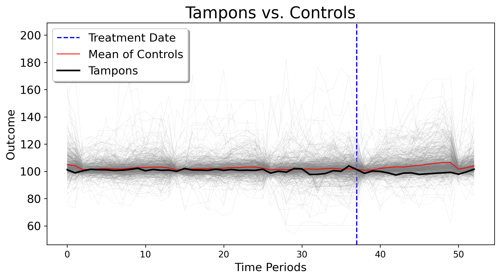
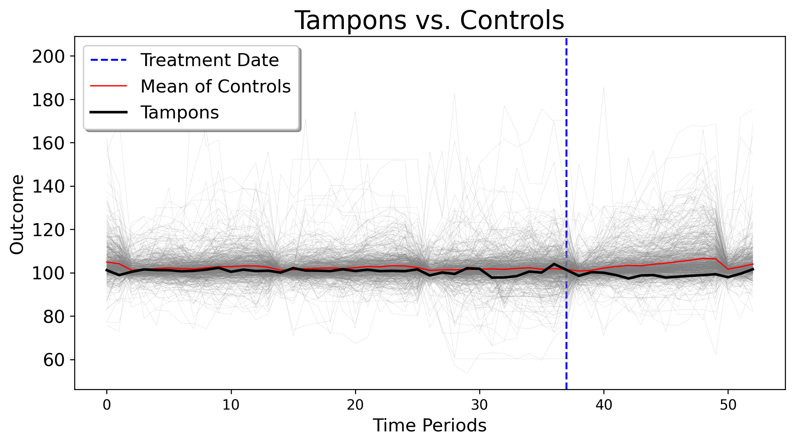

<Figure size 1200x660 with 0 Axes>Jared Greathouse
February 14, 2025
policy analysis, causal inference, data science, econometrics
I just began my dissertation last week. The first chapter studies the causal impact of Texas’ repeal of the tampon tax on demand as well as consumer price savings, naturally, using synthetic control methods as one may have guessed. I was doing the literature review, my favorite part of the research process, and upon doing some digging, I had to write a post about this.
I found a paper called “Why current menstrual policies do not work”. Much of the framing of the paper is fine, until we get to the part about evidence regarding the tampon tax. King writes
Similarly, a recent UK campaign to abolish a 5% ‘tampon tax’ unintentionally boosted the profits of disposable product manufacturers by about £15 million per year, without substantially reducing the cost of products for consumers,
citing this paper by Tax Policy Associates, with the web version being at this link. I read this and though “Hmm, this is an empirical claim, I wonder what their causal methodology was. So I went to look the paper up as a bit of professional curiosity.
The paper studies the pass through rate of abolishing the tax on savings to consumers. To quote the paper directly,
We used Office for National Statistics data to analyse tampon price changes around 1 January 2021, the date that the “tampon tax” was abolished. We were able to do this because the ONS includes tampons (but not other menstrual products) in the price quotes it samples every month to compile the consumer prices index. Since 2017, the ONS has published the full datasets for its price sampling.
Okay fine. No problems so far. The euthors find “Overall, the average price for [tampons in] the period after the VAT abolition is about 1.5% less than it was beforehand.” Still no issues so far. But then we check the methodology, that they link to at their Github, and the results were less than exciting, putting it politely. Why? The authors do a simple t-test. That is, a simple pre-post test which compares the mean difference of tampon prices before the abolition of the tax and after the abolition of the tax. Precisely, they write
Apply [sic] statistical techniques to these datasets is not straightforward given the limited number of datapoints and very high degree of volatility. It was, however, thought appropriate to run an unequal variance one-sided t-test (using the python SciPy library) to compare the pricing datasets for the six months before 1 January 2021 with those for the subsequent six months.
Appropriate? By who? Who said this was a good idea? Look, I knmow that real data are often messy and that we have to take steps to compensate for noise, corruption, and overall lack of cleanliness, but I want to be clear about something: no matter what the extant difficulties are, this is not at all the correct way to do things, and the point of this post is to explain why. To really understand what’s wrong here, we have to go back to basic causal inference and discuss data generating processes.
For DID, the DGP for the outcome \(y_{jt}\) is usually assumed to follow a two-way fixed effects model
\[ y_{jt} = \boldsymbol{\lambda}_j^\top \boldsymbol{\delta}_t + \boldsymbol{\epsilon}_{jt} \]
where we have \(\boldsymbol{\lambda}_j = \begin{bmatrix} a_j \\ 1 \end{bmatrix} \in \mathbb{R}^2\) represents the unit-specific fixed effects, with \(a_j\) being the fixed effect for unit \(j\) and \(\boldsymbol{\delta}_t = \begin{bmatrix} 1 \\ b_t \end{bmatrix} \in \mathbb{R}^2\) represents the time-specific fixed effects, with \(b_t\) being the fixed effect for time \(t\). This simplifies to the outcomes being generated by a simple additive unit effect and time effect. It does not permit heterogeneous effects. In practice, DID is estimated via the OLS speciofication \(y_{1t}=\hat\alpha_{\mathcal{N}_0}+ \bar{y}_{\mathcal{N}_0t} \: t \in \mathcal{T}_1\), where \(\bar{y}_{\mathcal{N}_0t}\coloneqq \frac{1}{N_0} \sum_{j \in \mathcal{N}_0} y_{jt}\). The estimated least-squares intercept is computed like \(\hat\alpha_{\mathcal{N}_0} \coloneqq T_{1}^{-1}\sum_{t \in \mathcal{T}_{1}}\left(y_{1t}-\bar{y}_{\mathcal{N}_0t}\right)\). What we take away from this setup is that we do not require the paths of the treated units and control group to be the same. We just require that they be parallel to each other in the pre-intervention period on the hopes that absent the treatment, they would evolve similarly absent treatment, with the additional assumption of no anticipation and SUTVA. We can even express this with expectations, as is usually done. Parallel trends requires that, in the absence of treatment ((d_jt = 0) for treated units), the difference in outcomes between the treated and control groups would follow a parallel trend. This can be expressed as:
\[ \mathbb{E}[y_{jt} \mid d_jt = 1] - \mathbb{E}[y_{jt} \mid d_jt = 0] = \mathbb{E}[\boldsymbol{\lambda}_j^\top \boldsymbol{\delta}_t] \quad \text{for all } t \]
All we’re saying here is that the difference between our observed outcomes and our control group outcomes should be equvalent to the additive factor model we just specified. Now, we may substitute the scalar interpretation of this into this, giving us:
\[ \mathbb{E}[y_{jt} \mid d_{jt} = 1] = a_j + b_t + \mathbb{E}[\epsilon_{jt} \mid d_{jt} = 1] \] which is simply the factor model for the treated unit and \[ \mathbb{E}[y_{jt} \mid d_{jt} = 0] = a_j + b_t + \mathbb{E}[\epsilon_{jt} \mid d_{jt} = 0] \] is the same for the control units. Thus, the difference between the treated and control groups’ expected outcomes, in the absence of treatment, should be:
\[ \mathbb{E}[y_{jt} \mid D_j = 1] - \mathbb{E}[y_{jt} \mid D_j = 0] = \left(a_j + b_t + \mathbb{E}[\epsilon_{jt} \mid D_j = 1]\right) - \left(a_j + b_t + \mathbb{E}[\epsilon_{jt} \mid D_j = 0]\right) \]
Notice that the unit-specific fixed effect (a_j) and the time-specific fixed effect (b_t) cancel out, as they are the same for both treated and control groups. This leaves us with:
\[ \mathbb{E}[y_{jt} \mid D_j = 1] - \mathbb{E}[y_{jt} \mid D_j = 0] = \mathbb{E}[\epsilon_{jt} \mid D_j = 1] - \mathbb{E}[\epsilon_{jt} \mid D_j = 0] \]
For the parallel trends assumption to hold, this difference should be constant over time, implying that:
\[ \mathbb{E}[\epsilon_{jt} \mid d_{jt} = 1] - \mathbb{E}[\epsilon_{jt} \mid d_{jt} = 0] = \text{constant } \forall \, t \]
Or, that conditional only on some error term, the difference is constant with respect to both the treated and untreated groups.
We can do the exact same thing with the t-test too. In the pre-treatment period, the expected outcome for unit \(j\) is:
\[ \mathbb{E}[y_{jt} \mid d_{jt} = 0] = \mathbb{E}[\lambda_j + \epsilon_{jt} \mid d_{jt} = 0] \]
Since \(\lambda_j\) is constant, the expected outcome simplifies to:
\[ \mathbb{E}[y_{jt} \mid d_{jt} = 0] = \lambda_j + \mathbb{E}[\epsilon_{jt} \mid d_{jt} = 0] \]
Similarly, in the post-treatment period, the expected outcome for unit \(j\) is:
\[ \mathbb{E}[y_{jt} \mid d_{jt} = 1] = \mathbb{E}[\lambda_j + \epsilon_{jt} \mid d_{jt} = 1] \]
Since\(\lambda_j\) is constant, the expected outcome simplifies to:
\[ \mathbb{E}[y_{jt} \mid d_{jt} = 1] = \lambda_j + \mathbb{E}[\epsilon_{jt} \mid d_{jt} = 1] \]
Now, we compute the difference in expected outcomes between the pre-treatment and post-treatment periods for the treated unit:
\[ \underbrace{\mathbb{E}[y_{jt} \mid d_{jt} = 0]}_{\text{Pre-Period}} - \underbrace{\mathbb{E}[y_{jt} \mid d_{jt} = 1]}_{\text{Post-Period}} = \left( \lambda_j + \underbrace{\mathbb{E}[\epsilon_{jt} \mid d_{jt} = 1]}_{\text{Post-Period}} \right) - \left( \lambda_j + \underbrace{\mathbb{E}[\epsilon_{jt} \mid d_{jt} = 0]}_{\text{Pre-Period}} \right) \]
Since ( _j ) is constant for both periods, it cancels out:
\[ \underbrace{\mathbb{E}[y_{jt} \mid d_{jt} = 1]}_{\text{Post-Period}} - \underbrace{\mathbb{E}[y_{jt} \mid d_{jt} = 0]}_{\text{Pre-Period}} = \underbrace{\mathbb{E}[\epsilon_{jt} \mid d_{jt} = 1]}_{\text{Post-Period}} - \underbrace{\mathbb{E}[\epsilon_{jt} \mid d_{jt} = 0]}_{\text{Pre-Period}} \]
For the pre-post t-test to be valid, we essentially must assume that the error terms \(\epsilon_{jt}\) are independent and identically distributed between the pre-treatment and post-treatment periods. This means that any difference in outcomes between the pre-treatment and post-treatment periods should be solely due to the treatment effect, and not due to other unobserved factors.
The assumption is that the expected difference in error terms between the two periods is zero:
\[ \mathbb{E}[\epsilon_{jt} \mid d_{jt} = 1] - \mathbb{E}[\epsilon_{jt} \mid d_{jt} = 0] = 0 \]
Thus, the difference in expected outcomes for the treated unit in the pre- and post-treatment periods simplifies to:
\[ \mathbb{E}[y_{jt} \mid d_{jt} = 1] - \mathbb{E}[y_{jt} \mid d_{jt} = 0] = 0 \]
This result implies that any observed difference in outcomes between the pre- and post-treatment periods is entirely due to the treatment effect, assuming no confounding or time-specific effects. This is before I even get into the fact that the t-test presumes that the observations are independent (they rarely if ever are in time series, basically).
In fairness, the authors do recognize these shortcomings, writing
The prices of tampons and the other consumer goods considered in this paper will be affected by numerous factors – the supply of raw materials, energy costs, and sheer random happenstance. It is therefore unsurprising that we see a large amount of month-to-month variation in prices; this makes it difficult to identify separate real trends from noise. More sophisticated statistical methods than a t-test are therefore not helpful (difference-in-difference and synthetic control methods were attempted, but did not produce meaningful results).
I agree that there are plenty of confounding factors (mostly unobserved) and noise, but in situations like that, we use modern advances in econometrics to deal with these cases, instead of shoehorning a method to fit the data limitations.
mlsynth
<Figure size 1200x660 with 0 Axes>After analysis.